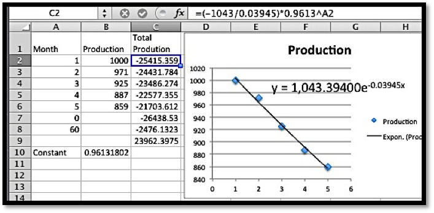
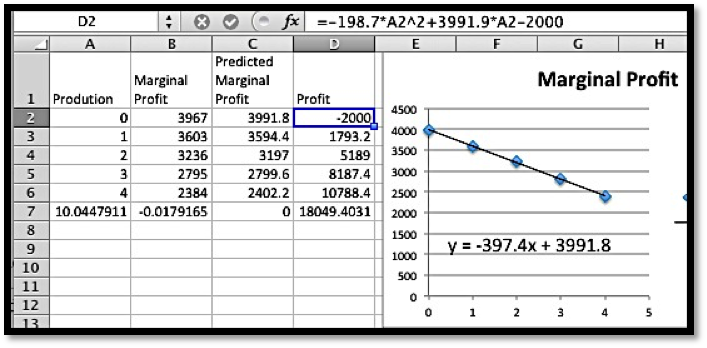

Section 7.3 Basic Antidifferentiation
In the last section we looked at the fundamental theorem of calculus and saw that it could be used to find definite integrals. We saw:
Fundamental Theorem of Calculus (second version).
Let \(f(x)\) be a continuous function on the interval \([a, b]\text{.}\) Suppose \(F(x)\) is any continuous, differentiable function with \(\frac{d}{dx} F(x)=f(x)\text{.}\) Then \(\int_a^b f(t)\,dt=F(b)-F(a)\text{.}\)
We thus find it very useful to be able to systematically find an anti-derivative of a function. The standard notation is to use an integral sign without the limits of integration to denote the general anti-derivative. Thus, \(\int_a^b f(t)dt\) is referred to as the definite integral of \(f(x)\) from \(a\) to \(b\text{,}\) and it is a number. In contrast, \(\int f(x) dx\) is the indefinite integral of \(f(x)\text{,}\) and it is a function. We use indefinite integrals or anti-derivatives to evaluate definite integrals or areas.
We find anti-derivatives by starting with the differentiation formulas of basic functions and manipulating them so the derivative is a nice function.
Elementary Anti-derivative 1 — Find a formula for \(\int x^n\, dx\text{.}\)
We start with the closest differentiation formula \(\frac{d}{dx} x^n=nx^{n-1}\text{,}\) and manipulate it so \(x^n\) is on the right hand side. We first replace \(n\) with \(n+1\) to get \(\frac{d}{dx} x^{n+1}=(n+1)x^n\text{.}\) We then divide both sides by \(n+1\) to obtain \(x^n=\frac{d}{dx} x^{n+1}/(n+1)\text{.}\) Finally, we note that adding a constant \(C\) does not change the derivative, so \(x^n=\frac{d}{dx} (x^{n+1}/(n+1)+C)\text{.}\) Since we have divided by \(n+1\text{,}\) we need to insist that \(n+1\ne 0\text{.}\) Using the notation of indefinite integrals we obtain our power rule formula:
\begin{equation*}
\int x^n\, dx=\frac{x^{n+1}}{n+1}+C, \text{ assuming } n\neq -1\text{.}
\end{equation*}
Note that this matches the pattern we found in the last section.
Elementary Anti-derivative 2 — Find a formula for \(\int 1/x \,dx\text{.}\)
We start with the closest differentiation formula \(\frac{d}{dx} \ln (x)=1/x\text{.}\) In this case, we need to note that natural logarithms are only defined positive numbers and we would like a formula that is true for positive and negative numbers. We can do this with an appropriate use of absolute value bars. Thus, \(\frac{d}{dx} (\ln(|x|)+C)=1/x\text{,}\) and we have our second formula:
\begin{equation*}
\int 1/x\, dx=\ln |x|+C\text{.}
\end{equation*}
Elementary Anti-derivative 3 — Find a formula for \(\int e^x\, dx\text{.}\)
Once again, we start with the closest differentiation formula \(\frac{d}{dx} e^x=e^x\text{.}\) In this case we don’t have to do any manipulation, and we have our formula:
\begin{equation*}
\int e^x \,dx=e^x+C\text{.}
\end{equation*}
Elementary Anti-derivative 4 — Find a formula for \(\int a^x\, dx\) for a positive number \(a\text{.}\)
This formula requires a bit more work. We start with the formula \(\frac{d}{dx} a^x=\ln (a) a^x\text{.}\) Dividing both sides by the constant \(\ln(a)\) gives \(a^x=\frac{d}{dx} (a^x/\ln (a) +C)\text{.}\) Thus our integral is:
\begin{equation*}
\int a^x dx=\frac{a^x}{\ln (a)} +C\text{.}
\end{equation*}
Sum, Difference, and Constant Multiple rules — The rules we had for taking derivatives of sums, differences, and constant multiples of functions translate into similar rules for integrals.
The derivatives of a sum rule, \(\frac{d}{dx}(f(x)+g(x))=\frac{d}{dx}f(x)+\frac{d}{dx}g(x)\text{,}\) becomes the
Integral of a Sum Rule.
\begin{equation*}
\int (f(x)+g(x))\,dx=\int f(x)\,dx+\int g(x)\,dx
\end{equation*}
The derivatives of a difference rule, \(\frac{d}{dx}(f(x)-g(x))=\frac{d}{dx}f(x)-\frac{d}{dx}g(x)\text{,}\) becomes the
Integral of a Difference Rule.
\begin{equation*}
\int (f(x)-g(x))\,dx=\int f(x)\,dx-\int g(x)\,dx
\end{equation*}
Integral of a Constant Multiple Rule.
\begin{equation*}
\int cf(x) dx=c\int f(x)\,dx
\end{equation*}
We can use these rules to find the indefinite integrals on a lot of functions. They cover all polynomials.
Example 7.3.1. Antiderivative of integral powers.
Find the integral \(\int 3x^5+4x^2+5+\frac{7}{x}\,dx\text{.}\)
Solution.
\begin{align*}
\int 3x^5+4x^2+5+\frac{7}{x}\,dx \amp =\int 3x^5\,dx+\int 4x^2\,dx+\int 5\,dx+\int \frac{7}{x}\,dx\quad\text{(sum rule)}\\
\amp =3\int x^5\,dx+4\int x^2\,dx+5\int \,dx+\int 7\frac{1}{x}\,dx \quad\text{(constant multiple rule)}\\
\amp =3\int x^5\,dx+4\int x^2\,dx+5\int \,dx+ 7\ln|x|+C \quad \text{(natural log rule)}\\
\amp =\frac{3}{6} x^6+\frac{4}{3}x^3+5x+ 7\ln|x|+C \quad \text{(power rule)}\text{.}
\end{align*}
One might argue that the last line should have been
\begin{equation*}
=\frac{3}{6} x^6+C_1+\frac{4}{3}x^3+C_2+5x+C_3+ 7\ln|x|+C_4
\end{equation*}
since each indefinite integral gets a constant C. However all of the constants used here are arbitrary constants and they can be collapsed together into a single constant \(C\text{.}\)
We can also use these rules to find indefinite integrals for roots.
Example 7.3.2. Antiderivative of fractional powers.
Find the integral \(\int \sqrt{2x}+\sqrt[3]{4x}\,dx\text{.}\)
Solution.
\begin{align*}
\int \sqrt{2x}+\sqrt[3]{4x}\,dx \amp = \int \sqrt{2x}\,dx+\int \sqrt[3]{4x}\,dx \quad\text{(sum rule)}\\
\amp =\sqrt{2}\int \sqrt{x}\,dx+\sqrt[3]{4}\int \sqrt[3]{x}\,dx \quad \text{(constant multiple rule)}\\
\amp=\sqrt{2}\int x^{(1/2)}\,dx+\sqrt[3]{4}\int x^{(1/3)}\,dx \quad \text{(rules of exponents)}\\
\amp =\sqrt{2} x^{(3/2)}(2/3)+\sqrt[3]{4}x^{(4/3)}(3/4)+C \quad \text{(power rule)}\text{.}
\end{align*}
We can also find anti-derivatives of exponential and power functions.
Example 7.3.3. Antiderivative of power and exponential functions.
Find the integral \(\int 2*3^x+4e^x\,dx\text{.}\)
Solution.
\begin{align*}
\int 2*3^x+4e^x\,dx \amp =\int 2*3^x\,dx+\int 4e^x\,dx \quad \text{(sum rule)}\\
\amp =2\int 3^x\,dx+4\int e^x\,dx\quad\text{(constant multiple rule)}\\
\amp=\frac{2}{\ln(3)} 3^x+4 e^x+C\quad\text{(exponential rules)}\text{.}
\end{align*}
As we mentioned earlier in the section, the normal reason for wanting to find indefinite integrals is to be able to use them with the fundamental theorem of calculus to find definite integrals.
Example 7.3.4. Area under a polynomial function.
Evaluate the definite integral \(\int_1^3 6x^2+2\,dx\text{.}\)
Solution.
We first evaluate the indefinite integral to find an anti-derivative.
\begin{equation*}
\int 6x^2+2\,dx=2x^3+2x+C\text{.}
\end{equation*}
Since we can use any anti-derivative, we simplify by setting \(C = 0\) and choosing the anti-derivative \(F(x)=2x^3+2x\text{.}\)
\begin{equation*}
\int_1^3 6x^2+2\,dx=F(3)-F(1)=60-4=56\text{.}
\end{equation*}
If we choose a different value for \(C\text{,}\) it cancels out when we subract the values at the endpoints.,
Example 7.3.5. Area under \(\frac{1}{x}\).
Evaluate the definite integral \(\int_1^{100}\frac{1}{x} dx\text{.}\)
Solution.
We first evaluate the indefinite integral to find an antiderivative.
\begin{equation*}
\int \frac{1}{x}\,dx=\ln(|x|)+C\text{.}
\end{equation*}
Since we can use any antiderivative, we simplify by setting \(C = 0\) and choosing that anti-derivative \(F(x)=\ln(|x|)\text{.}\)
\begin{equation*}
\int_1^{100}\frac{1}{x}\,dx=F(100)-F(1)=\ln(100)-\ln(1)=\ln(100)\text{.}
\end{equation*}
Example 7.3.6. Using the FTC when the function is fit from data.
From experience, I know that the output of an oil well follows a model of exponential decay. I have the following data for the production, in barrels, for the first 5 months.
| Month |
Jan |
Feb |
Mar |
Apr |
May |
| Production |
1000 |
971 |
925 |
887 |
859 |
Find the production over the first 5 years.
Solution.
The total production for 5 years will be the definite integral of the production function for the first 60 months. We first use Excel to find a best fitting exponential function.

The production function (\(P\)) in terms of the number of months (\(x\)) is given by
\begin{equation*}
P(x)=1043 e^{-0.03945 x}\text{.}
\end{equation*}
We would like to take an anti-derivative, but we don’t have a formula for this anti-derivative yet. However, we note
\begin{equation*}
e^{-0.03945 x}= (e^{-0.03945} )^x=0.9613^x
\end{equation*}
and we know that \(\ln (0.9613)=-0.03945\text{.}\) We can now use our exponential rule, and
\begin{equation*}
\operatorname{Antideriv}P(x)=\frac{(1043*0.9613^x)}{(-0.03945)}+C\text{.}
\end{equation*}
Since we can use any anti-derivative, we simplify by setting \(C = 0\text{.}\) We can do this without creating any problems because we are using the equation where two values of the anti-derivative will be subtracted from one another, and hence the \(C\) values would cancel anyways. We now evaluate our integral.
\begin{align*}
\operatorname{Total}P(60) \amp = \Antideriv P(60) - \Antideriv P(0)\\
\amp = (-2467) - (-26438) = 23962\text{.}
\end{align*}
Thus over 5 years the well will produce 23,962 barrels.
Another application for anti-derivatives is solving an initial value problem. In that case we want to a particular anti-derivative that has a particular value for a specified \(x\text{.}\) In this situation we may not set \(C\) to zero. In fact, part of the problem will be to find the appropriate value of \(C\text{.}\)
Example 7.3.7. Finding a value of \(C\) to match initial conditions.
The marginal cost (MC) of producing a certain quantity (\(q\)) of widgets is given by
\begin{equation*}
\MC(q)=5-0.002 q\text{.}
\end{equation*}
The cost of producing 1000 widgets is $6,000. Assume that the derivative of the cost function is approximated closely enough by the marginal cost to be used interchangeably. Find a cost function for producing widgets.
Solution.
Since Cost is an anti-derivative of the Marginal Cost we have \(\cost(q) = 5q - 0.001*q^2 + C\text{.}\) We also know \(\cost(1000) = 6000\text{.}\) Plugging that in gives
\begin{equation*}
\cost(1000)= 5*1000 - 0.001*1000^2 + C=6000\text{.}
\end{equation*}
Solving for \(C\) gives \(C = 2000\text{.}\) Thus our cost function is
\begin{equation*}
\cost(q) = 5q - 0.001*q^2 + 2000\text{.}
\end{equation*}
Example 7.3.8. Building a profit function form data.
Experience tells me that the marginal profit of producing gadgets is a linear function. My start-up costs are $2 million. I have the following data with my units being thousands of dollars per millions of units.
| Production |
0 |
1 |
2 |
3 |
4 |
| Marginal Profit |
$3,3967 |
$3,603 |
$3,236 |
$2,795 |
$2,384 |
Produce a profit function, find the number of units that maximizes profit, and find the maximum profit.
Solution.
I start by finding a best fitting line to the data.

Excel tells me the marginal profit function is
\begin{equation*}
\MP(x) = -397.4 x + 3991.8\text{.}
\end{equation*}
We have maximum profit when the marginal profit is zero. Using Goal Seek, the Marginal Profit is zero with a production of 10.0448 millions of units. The anti-derivative of this function is
\begin{equation*}
P(x)= -198.7 x^2 + 3991.8x + C\text{.}
\end{equation*}
Plugging in the initial costs into the production model, recalling that our function is written in thousands of dollars per millions of widgets, gives
\begin{equation*}
P(0) = -2000 = C\text{.}
\end{equation*}
So our profit function is
\begin{equation*}
P(x)= -198.7 x^2 + 3991.8 x-2000\text{.}
\end{equation*}
We saw that \(\MP(x) = 0\text{,}\) when \(x = 10.0448\text{.}\) The maximum profit is the computed by evaluating \(P(x)\) at \(x = 10.0448\text{.}\) A quick computation shows that the maximum profit is $18,049 thousands of dollars, or a bit more than $18 million.
It is worthwhile summarizing our list of integration formulas.
| \(f(x)\) |
\(\int f(x)\,dx\) |
| \(\displaystyle x^n\text{, assuming }n\ne 1\) |
\(\displaystyle \frac{x^{n+1}}{n+1}+C\) |
| \(\displaystyle \frac{1}{x}\) |
\(\displaystyle \ln|x|+C\) |
| \(\displaystyle e^x\) |
\(\displaystyle e^x+C\) |
| \(\displaystyle a^x\) |
\(\displaystyle \frac{a^x}{\ln(a)}+C\) |
| \(\displaystyle (f+g)(x)\) |
\(\displaystyle \int f(x)\,dx+\int g(x)dx\) |
| \(\displaystyle (f-g)(x)\) |
\(\displaystyle \int f(x)\,dx-\int g(x)dx\) |
| \(\displaystyle c*f(x)\) |
\(\displaystyle c*\int f(x)\,dx\) |
A word of warning — The anti-differentiation formulas we have produced only work for the functions given, allowing for changes in variables. At this point the only way we have for finding \(\int(3x+5)^2 dx\) is expand the integrand getting \(\int(9x^2+30x+25)dx\) before applying our rules. In general, the process of finding anti-derivatives symbolically is an art form that we only begin to work with in this course.
Reading Questions Reading Check
1. Reading check, Basic Antidifferentiation.
Exercises Exercises: Basic Antidifferentiation Problems
Exercise Group.
Find antiderivatives for the given functions.
1.
\begin{equation*}
f(x)=3x+5\text{.}
\end{equation*}
Solution.
\begin{equation*}
F(x)=\frac{3x^2}{2}+5x+C\text{.}
\end{equation*}
2.
\begin{equation*}
f(x)=5x^3+4x+3\text{.}
\end{equation*}
3.
\begin{equation*}
f(x)=x^{3,124,567}+2x^{473}+327 x^{-2,786,534}\text{.}
\end{equation*}
Solution.
\begin{equation*}
F(x)=\frac{x^{3,124,568}}{3,124,568}+2 \frac{x^{474}}{474}+327 \frac{x^{-2,786,533}}{-2,786,533}+C\text{.}
\end{equation*}
4.
\begin{equation*}
f(x)=\sqrt{11x}+\frac{5}{x}\text{.}
\end{equation*}
5.
\begin{equation*}
f(x)=e^x+\left(\frac{1}{2}\right)^x\text{.}
\end{equation*}
Solution.
\begin{equation*}
F(x)=e^x+\frac{\left(\frac{1}{2}\right)^x}{\ln\left(\frac{1}{2}\right)}+C\text{.}
\end{equation*}
6.
\begin{equation*}
f(x)=\pi^x+\pi^\pi+x^\pi\text{.}
\end{equation*}
Exercise Group.
Evaluate the definite integrals by first finding an antiderivative.
7.
\begin{equation*}
\int_0^5 x+7\, dx\text{.}
\end{equation*}
Solution.
The anti-derivative is: \(F(x)=x^2/2+7x\) (with these definite integrals we may choose the constant to be 0.)
\begin{equation*}
\int_0^5 (x+7)dx=F(5)- F(0)=\frac{25}{2}+35-0=\frac{95}{2}\text{.}
\end{equation*}
8.
\begin{equation*}
\int_1^{10}\frac{1}{x}\, dx\text{.}
\end{equation*}
9.
\begin{equation*}
\int_2^{10} 3x+\frac{5}{x}\, dx\text{.}
\end{equation*}
Solution.
The anti-derivative is: \(F(x)=(3x^2)/2+5 \ln|x|\text{.}\)
\begin{align*}
\int_2^{10} 3x+\frac{5}{x} dx \amp =F(10)-F(2)=\frac{300}{2}+5 \ln(10)-\left(\frac{12}{2}+5 \ln(2) \right)\\
\amp =150+5 \ln(10)-6-5 \ln(2)=144+5(\ln(10)-\ln(2) )\\
\amp = 144+5 \ln\left(\frac{10}{2}\right)=144+5 \ln(5)\text{.}
\end{align*}
10.
\begin{equation*}
\int_1^{100}\left(\frac{1}{2}\right)^x\, dx\text{.}
\end{equation*}
11.
\begin{equation*}
\int_{-10}^2 e^x+e \, dx\text{.}
\end{equation*}
Solution.
The anti-derivative is: \(F(x)=e^x+e x\text{.}\)
\begin{align*}
\int_{-10}^2 e^x+e dx \amp =F(2)-F(-10)=e^2+2e-(e^{-10}-10 e)\\
\amp = e^2-\frac{1}{e^{10}} +12e\text{.}
\end{align*}
12.
\begin{equation*}
\int_{-2}^5 x^{-2}+x^{-1} \, dx\text{.}
\end{equation*}
Exercise Group.
Solve the Initial value problem.
13.
Let \(f(x)=4x+3\text{.}\) The function \(F(x)\) is an antiderivative, and \(F(0)=7\text{.}\)
Solution.
The anti-derivative is: \(F(x)=2x^2+3x+C\text{.}\)
\(F(0)= 7\) implies that \(F(0)=0+C=7\text{,}\) so \(C = 7\)
Then \(F(x)=2x^2+3x+7\text{.}\)
14.
Let \(f(x)=3x^2-6x+5\text{.}\) The function \(F(x)\) is an antiderivative, and \(F(3)=17\text{.}\)
15.
Let \(f(x)=100(0.95)^x\text{.}\) The function \(F(x)\) is an antiderivative, and \(F(5)=9\text{.}\)
Solution.
The anti-derivative is:
\begin{equation*}
F(x)=\frac{100 (0.95)^x }{\ln(0.95)} +C\text{.}
\end{equation*}
\(F(5)= 9\) implies that
\begin{align*}
F(5)\amp =\frac{100 (0.95^5 )}{\ln(0.95)} +C=9\\
C\amp =9-\frac{100 (0.95^5 )}{\ln(0.95)}\approx 9+1508.54=1517.54\text{.}
\end{align*}
Then
\begin{equation*}
F(x)\approx\frac{100 (0.95^x )}{\ln(0.95)} +1517.54\text{.}
\end{equation*}
16.
Let \(f(x)=7/x+x^2\text{.}\) The function \(F(x)\) is an antiderivative, and \(F(1)=11\text{.}\)
17.
An investment provides an income stream of \(1000 (0.95)^t\) dollars per year. How much is received in the first 10 years?
Solution.
\begin{align*}
\text{Income}\amp =\int_0^{10}1000(0.95)^t\, dt =\left.\frac{1000(0.95)^t)}{\ln(0.95)} \right|_{t=0}^{t=10}\\
\amp =\frac{1000(0.95)^{10}}{\ln(0.95)} -\frac{1000(0.95)^0}{\ln(0.95)} \\
\amp \approx -11672.81+19495.73=7822.91\text{.}
\end{align*}
18.
A firm has a marginal profit function of \(MP(x) = 50 - 3 x\) in thousands of dollars per thousands of units. How much is profit increased if production is shifted from 10 to 15 thousand units?
19.
After the first year, the rate of sales of a fad product are \(\operatorname{sales}(t) = \frac{1000}|t|\) with time in years. How many units are sold from the end of the first year to the end of the tenth year?
Solution.
\begin{align*}
\text{sales}\amp =\int_1^{10}\frac{1000}{t}\, dt=1000 \ln(t) |_{t=1}^{t=10}\\
\amp =1000(\ln(10)-\ln(0) )\\
\amp =1000\ln(10)\approx 2302.58\text{.}
\end{align*}
20.
A software company allows your company to expand the number of licenses your company owns by charging a marginal rate of \(\MR(\text{licenses})=\frac{200}{\sqrt{\text{licenses}}}\text{.}\) How much does it cost to increase your license from 1000 to 2000 licenses?
21.
The production function for a given oil well is \(rate(t) = 400(0.9)^t\) with time measured in years and production measured in millions of barrels of oil.
How much oil is produced in the first year?
How much oil is produced in the tenth year?
If I need to produce 75 thousand barrels of oil per year for the well to be financially viable, what is the life of the well?
How much oil will the well produce before being shut down?
Solution.
\begin{align*}
\text{Production}\amp =\int_0^{1}400(0.9)^t\, dt =\left.\frac{400}{\ln(0.9)} (0.9)^t \right|_{t=0}^{t=1}\\
\amp =\frac{400}{\ln(0.9)} (0.9-1)\approx 379.649 \text{.}
\end{align*}
\begin{align*}
\text{Production}\amp =\int_9^{10}400(0.9)^t\, dt =\left.\frac{400}{\ln(0.9)} (0.9)^t \right|_{t=9}^{t=10}\\
\amp =\frac{400}{\ln(0.9)} (0.9^{10}-0.9^{9})\approx 147.08 \text{.}
\end{align*}
\begin{align*}
0.075\amp =400*(0.9)^t\\
t\amp =ln(0.75/400)/ln(0.9)\approx 81.451\text{.}
\end{align*}
Use Goal seek:
\begin{align*}
75\amp =400(0.9^t)\\
t \amp \approx 15.8881\text{.}
\end{align*}
22.
The expected value received from a particular revenue stream should be an exponential function. I have the following data for income received over the past 5-year period.
| Year |
1 |
2 |
3 |
4 |
5 |
| Income |
$1,030 |
$1,078 |
$1,110 |
$1,169 |
$1,225 |
How much do I expect to receive over the next 10 years?
23.
From experience, I expect the marginal revenue for my firm to be a quadratic function. I have the following data on revenue at a variety of levels, with production in thousands of units and marginal profit in millions of dollars.
| Production |
$4.90 |
$7.04 |
9.00 |
11.03 |
14.00 |
| MProfit |
7.40 |
9.12 |
9.90 |
9.89 |
8.40 |
What is the expected change in revenue as I increase production from 15 to 20 thousand units?
Solution.
Using trend line, my function for \(\Mprofit\) is
\begin{equation*}
\Mprofit=-0.01\Production^2+2\Production+0.11\text{.}
\end{equation*}
Integrating from 15 to 20,
\begin{align*}
\profit \amp = \int_{15}^{20}-0.01x^2+2x+0.11 \, dx\\
\amp = \left.-\frac{0.01}{3} x^3+x^2+0.11x\right|_{x=15}^{x=20}\approx 160.133\text{.}
\end{align*}
The profit is approximately $160.133 million.